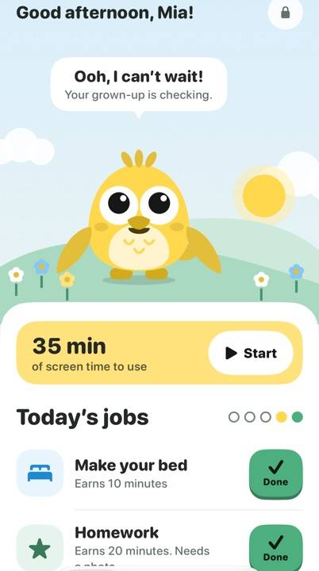
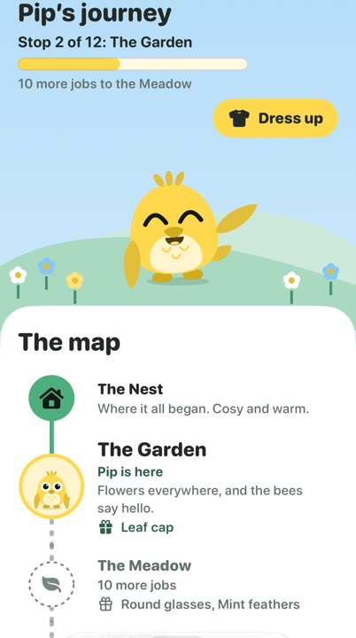
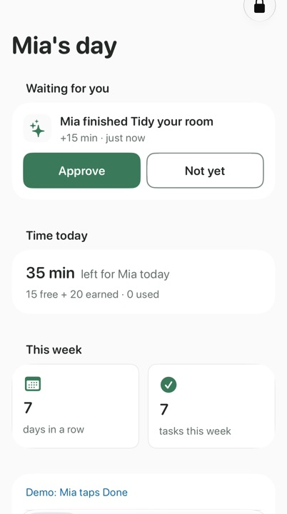

How it works
You set a few jobs
Make your bed, reading, homework, or anything you like, each worth some minutes of screen time.
Your child taps Done
On their own phone or iPad, or on yours. Pip gets excited.
You approve it, or say “not yet”
You get a message straight away. “Not yet” can come with a note, like “the bed too, please”.
They earn their time, and Pip grows
Approved minutes add up for the day. Every job helps Pip hatch, grow and travel somewhere new.
Turn over for what’s involved and how to join.



What we’d ask of you
- 3–4 weeks of using Fledgy as part of your normal days.
- A minute or two a day to set jobs and answer your child’s Dones.
- Two quick questions each week, sent by message.
- A 5-minute survey at the end. Honest answers help most, especially what didn’t work.
Good to know first
- It reminds, it doesn’t lock. When time’s up, Fledgy tells your child, but it can’t block other apps yet. You’re still in charge of that part.
- You’ll need an iPhone with a Google account to sign in. Your child can use their own iPhone or iPad, or share yours.
- It’s an early version. Things might wobble. When they do, I want to hear about it.
- It’s free, and you can stop at any time.
Fancy giving it a go?
Reply to the message you got, or email me:
- I’ll send you an invite to install Fledgy through TestFlight, Apple’s app for trying apps before they’re in the App Store.
- You set up your family on your phone, and pair your child’s device with a one-time code. It takes about five minutes.
- Then just use it. I’ll check in once a week.